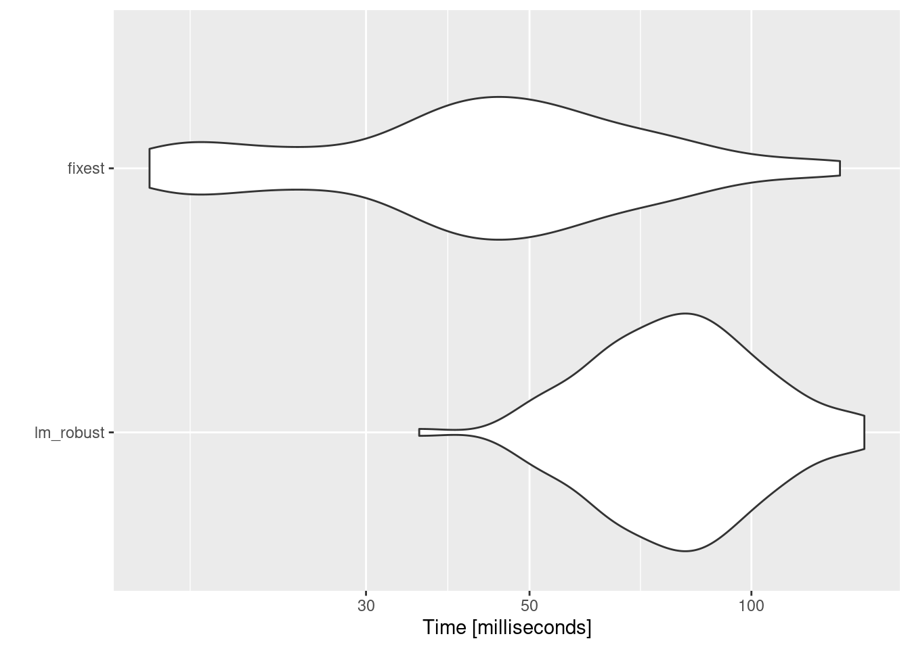

第6章 パネルデータ分析
先に出版社サイトよりデータをダウンロードする.
# サポートファイルへのリンク
curl <- "https://www.yuhikaku.co.jp/static_files/05385_support06.zip"
# ダウンロード保存用フォルダが存在しない場合, 作成
if(!dir.exists("downloads")){
dir.create("downloads")
}
cdestfile <- "downloads/support06.zip"
download.file(curl, cdestfile)
# データ保存用フォルダが存在しない場合, 作成
if(!dir.exists("data")){
dir.create("data")
}
# WSL上のRで解凍すると文字化けするので、Linuxのコマンドを外部呼び出し
# Windowsの場合は別途コマンドを用いる.
if(.Platform$OS.type == "unix") {
system(sprintf('unzip -n -Ocp932 %s -d %s', "downloads/support06.zip", "./data"))
} else {
print("Windowsで解凍するコマンドを別途追加せよ.")
}必要なライブラリを読み込む.
library(tidyverse)
library(estimatr)
library(modelsummary)
library(fixest)
library(gt)
library(haven)固定効果モデルをRで推定するためのパッケージは複数あり, これまで使ってきたestimatrのほかにfixestやplmなどが挙げられる.
ここではestimatrに加えて, 処理が高速とされるfixestでの推定方法も記す.
(6.1) 式
はじめにデータを読み込む. データ読込時, 本文中で分析されている通りに絞り込みを行う.
yamaguchi <- read.csv("data/06_第6章/yamaguchi.csv")
yamaguchi <- yamaguchi %>%
filter(year > 1999) %>%
filter(hh.type == "all")通常通りestimatr::lm_robust()で不均一分散を仮定して回帰するか, feols()を用いることもできる.
feols()ではvcov = "HC1"と指定することでStataと同じ標準偏差を得られる.
lm_robust(emp.rate ~ cap.rate, data = yamaguchi, se_type = "stata")
## Estimate Std. Error t value Pr(>|t|) CI Lower CI Upper DF
## (Intercept) 0.2081492 0.01814393 11.47212 7.493392e-22 0.1722755 0.2440230 139
## cap.rate 0.6154919 0.04391207 14.01646 2.244232e-28 0.5286699 0.7023139 139
feols(emp.rate ~ cap.rate, vcov = "HC1", data = yamaguchi)
## OLS estimation, Dep. Var.: emp.rate
## Observations: 141
## Standard-errors: Heteroskedasticity-robust
## Estimate Std. Error t value Pr(>|t|)
## (Intercept) 0.208149 0.018144 11.4721 < 2.2e-16 ***
## cap.rate 0.615492 0.043912 14.0165 < 2.2e-16 ***
## ---
## Signif. codes: 0 '***' 0.001 '**' 0.01 '*' 0.05 '.' 0.1 ' ' 1
## RMSE: 0.066148 Adj. R2: 0.530204実証例6.1 保育所が母親の就業に与え影響の固定効果推定
固定効果モデルもlm_robust()で推定できる. clusters引数にクラスタのレベル, fixed_effectsに固定効果の変数を指定する.
feolsではパイプ|の後ろに固定効果の変数を指定するのが本来の方法で, デフォルトでクラスター構造に頑健な標準誤差が得られるはずだが, なぜか異なる値となった. ご存じの方ご教授ください.
かわりに固定効果の変数とするprefを直接formulaに足すことで, Stataと同じ標準誤差を得られた.
lm_robust(emp.rate ~ cap.rate, data = yamaguchi, clusters = pref, fixed_effects = pref, se_type = "stata")
## Estimate Std. Error t value Pr(>|t|) CI Lower CI Upper DF
## cap.rate 0.8051027 0.0553063 14.55716 7.736456e-19 0.6937769 0.9164285 46
feols(emp.rate ~ cap.rate + pref, cluster = ~pref, data = yamaguchi)
## OLS estimation, Dep. Var.: emp.rate
## Observations: 141
## Standard-errors: Clustered (pref)
## Estimate Std. Error t value Pr(>|t|)
## (Intercept) 0.089848 0.021462 4.18630 1.2656e-04 ***
## cap.rate 0.805103 0.055306 14.55716 < 2.2e-16 ***
## pref京都府 -0.015791 0.001458 -10.82826 3.0501e-14 ***
## pref佐賀県 0.101711 0.000079 1291.87409 < 2.2e-16 ***
## pref兵庫県 0.013938 0.007831 1.77976 8.1722e-02 .
## pref北海道 0.047209 0.008154 5.78946 5.9824e-07 ***
## pref千葉県 0.036871 0.009491 3.88481 3.2612e-04 ***
## pref和歌山県 -0.100145 0.003400 -29.45717 < 2.2e-16 ***
## ... 40 coefficients remaining (display them with summary() or use argument n)
## ---
## Signif. codes: 0 '***' 0.001 '**' 0.01 '*' 0.05 '.' 0.1 ' ' 1
## RMSE: 0.012388 Adj. R2: 0.975372
# このやり方のほうが直感的だと思うのですが, なぜか同じ標準誤差を得られず... ご存じの方ご教授ください.
# feols(emp.rate ~ cap.rate | pref, data = yamaguchi)実証例6.2 保育所が母親の就業に与える影響の固定効果推定の標準誤差
実証例6.1を参照せよ.
実証例6.3 保育所が母親の就業に与え影響のプールされたOLS推定の標準誤差
自由度修正ホワイト標準誤差を得る式は(6.1)式を参照せよ.
lm_robust()でクラスター構造に頑健な標準誤差を求めるにはclusters引数を指定する.
一方feols()ではvcov引数にクラスター構造を指定すればよい.
# クラスター構造に頑健な標準誤差
lm_robust(emp.rate ~ cap.rate, data = yamaguchi, clusters = pref, se_type = "stata")
## Estimate Std. Error t value Pr(>|t|) CI Lower CI Upper DF
## (Intercept) 0.2081492 0.02820058 7.381027 2.451454e-09 0.1513844 0.2649140 46
## cap.rate 0.6154919 0.06742944 9.127940 6.822894e-12 0.4797635 0.7512203 46
feols(emp.rate ~ cap.rate, vcov = ~pref, data = yamaguchi)
## OLS estimation, Dep. Var.: emp.rate
## Observations: 141
## Standard-errors: Clustered (pref)
## Estimate Std. Error t value Pr(>|t|)
## (Intercept) 0.208149 0.028201 7.38103 2.4515e-09 ***
## cap.rate 0.615492 0.067429 9.12794 6.8229e-12 ***
## ---
## Signif. codes: 0 '***' 0.001 '**' 0.01 '*' 0.05 '.' 0.1 ' ' 1
## RMSE: 0.066148 Adj. R2: 0.530204実証例6.4 保育所が母親の就業に与える影響の時間効果を入れた分析
lm_robust()では, fixed_effects引数に時間効果の変数yearを指定する.
一方feols()ではformulaの後ろに|を付けて固定効果の変数を指定する.
lm_robust(emp.rate ~ cap.rate, data = yamaguchi, clusters = pref, fixed_effects = year, se_type = "stata")
## Estimate Std. Error t value Pr(>|t|) CI Lower CI Upper DF
## cap.rate 0.5848218 0.07301598 8.009504 2.863598e-10 0.4378482 0.7317953 46
feols(emp.rate ~ cap.rate | year, cluster = ~pref, data = yamaguchi)
## OLS estimation, Dep. Var.: emp.rate
## Observations: 141
## Fixed-effects: year: 3
## Standard-errors: Clustered (pref)
## Estimate Std. Error t value Pr(>|t|)
## cap.rate 0.584822 0.073016 8.0095 2.8636e-10 ***
## ---
## Signif. codes: 0 '***' 0.001 '**' 0.01 '*' 0.05 '.' 0.1 ' ' 1
## RMSE: 0.065255 Adj. R2: 0.536128
## Within R2: 0.489665実証例6.5 保育所が母親の就業に与える影響の都道府県効果と年効果を入れた分析
lm_robust()では, fixed_effects引数に都道府県効果と年効果両方pref + yearを指定する.
一方でfeols()では実証例6.1同様prefをパイプ|の後ろにいれると異なる標準誤差が出力されるため, やはりformulaに直接加え, cluster引数に都道府県を指定する.
lm_robust(emp.rate ~ cap.rate, data = yamaguchi, clusters = pref, fixed_effects = pref + year, se_type = "stata")
## Estimate Std. Error t value Pr(>|t|) CI Lower CI Upper DF
## cap.rate 0.09032499 0.07356807 1.227774 0.2257775 -0.05775986 0.2384098 46
feols(emp.rate ~ cap.rate + pref | year, cluster = ~pref, data = yamaguchi)
## OLS estimation, Dep. Var.: emp.rate
## Observations: 141
## Fixed-effects: year: 3
## Standard-errors: Clustered (pref)
## Estimate Std. Error t value Pr(>|t|)
## cap.rate 0.090325 0.073568 1.22777 2.2578e-01
## pref京都府 -0.034638 0.001940 -17.85623 < 2.2e-16 ***
## pref佐賀県 0.102728 0.000105 980.90855 < 2.2e-16 ***
## pref兵庫県 -0.087272 0.010417 -8.37790 8.2512e-11 ***
## pref北海道 -0.058177 0.010847 -5.36353 2.5715e-06 ***
## pref千葉県 -0.085792 0.012625 -6.79539 1.8483e-08 ***
## pref和歌山県 -0.056208 0.004522 -12.42916 2.6166e-16 ***
## pref埼玉県 -0.079666 0.014887 -5.35148 2.6792e-06 ***
## ... 39 coefficients remaining (display them with summary() or use argument n)
## ---
## Signif. codes: 0 '***' 0.001 '**' 0.01 '*' 0.05 '.' 0.1 ' ' 1
## RMSE: 0.007106 Adj. R2: 0.991718
## Within R2: 0.993948
# 下では異なる標準誤差が出力される.
# feols(emp.rate ~ cap.rate | pref + year, cluster = ~pref, data = yamaguchi)実証例6.6 保育所が母親の就業に与える影響の個別トレンドと年効果を入れた分析
lm_robust()で複数の固定効果を入れるとき, formulaやfixed_effectsの指定の仕方によっては一部の変数がNAになるなど挙動がおかしくなることがある (参考).
feols()では, formula中にi()を使って固定効果変数を指定することで, 正しい標準誤差が得られるが, 正しい標準誤差が必要ない場合はコメントした3つめの方法のほうが速いとのこと (feols公式リファレンスのInteractionsの節を見よ).
lm_robust(emp.rate ~ cap.rate + pref + pref:year + factor(year), data = yamaguchi, clusters = pref, se_type = "stata")
## 1 coefficient not defined because the design matrix is rank deficient
## Estimate Std. Error t value Pr(>|t|)
## (Intercept) NA NA NA NA
## cap.rate 9.152586e-02 1.711945e-01 0.53463092 5.954800e-01
## pref京都府 -2.871962e+00 2.980210e-01 -9.63677465 1.302610e-12
## pref佐賀県 2.217746e+00 1.038863e+00 2.13478216 3.813866e-02
## pref兵庫県 -1.674131e+00 3.096746e-01 -5.40609737 2.224415e-06
## pref北海道 -2.027188e+00 3.719798e-01 -5.44972514 1.916879e-06
## pref千葉県 1.008553e+00 8.235894e-01 1.22458214 2.269671e-01
## pref和歌山県 -2.425115e+00 1.995858e+00 -1.21507391 2.305380e-01
## pref埼玉県 -3.204944e+00 2.345052e-01 -13.66683775 8.267630e-18
## pref大分県 5.073632e-03 1.070371e-01 0.04740068 9.623991e-01
## pref大阪府 -3.544666e+00 5.791509e-01 -6.12045289 1.910245e-07
## pref奈良県 -2.726156e+00 2.286274e-01 -11.92401378 1.133222e-15
## pref宮城県 6.645164e+00 2.957274e-01 22.47057454 1.925684e-26
## pref宮崎県 8.787160e-01 7.167609e-02 12.25954090 4.264852e-16
## pref富山県 6.196146e-01 2.014006e+00 0.30765283 7.597352e-01
## pref山口県 1.556481e+00 2.694339e-01 5.77685746 6.247431e-07
## pref山形県 1.262470e+01 1.220833e+00 10.34105881 1.385765e-13
## pref山梨県 1.024933e+00 2.030432e+00 0.50478581 6.161191e-01
## pref岐阜県 1.822042e+00 5.200581e-01 3.50353633 1.034380e-03
## pref岡山県 1.027390e+00 7.911333e-01 1.29863084 2.005433e-01
## pref岩手県 3.840666e+00 2.153963e+00 1.78306992 8.117418e-02
## pref島根県 -2.455887e+00 3.853635e+00 -0.63729092 5.270947e-01
## pref広島県 1.248305e+00 3.022802e-01 4.12962970 1.515124e-04
## pref徳島県 1.757559e+00 5.668540e-01 3.10054989 3.293771e-03
## pref愛媛県 -4.404752e-01 7.973306e-01 -0.55243733 5.833233e-01
## pref愛知県 3.278383e-01 7.286383e-01 0.44993284 6.548721e-01
## pref新潟県 3.477857e+00 1.423998e+00 2.44231814 1.849492e-02
## pref東京都 7.338397e-01 1.591782e+00 0.46101772 6.469583e-01
## pref栃木県 3.625324e+00 8.809020e-02 41.15468113 6.112933e-38
## pref沖縄県 4.899894e-01 6.460539e-01 0.75843429 4.520596e-01
## pref滋賀県 1.900476e+00 2.319337e-01 8.19404868 1.533055e-10
## pref熊本県 3.927163e+00 2.068275e-01 18.98762881 2.125341e-23
## pref石川県 3.910248e-01 1.234511e+00 0.31674467 7.528704e-01
## pref神奈川県 -6.634092e-01 1.870506e-01 -3.54668267 9.101361e-04
## pref福井県 3.534852e+00 1.823700e+00 1.93828551 5.873952e-02
## pref福岡県 1.497746e+00 6.314768e-01 2.37181530 2.194159e-02
## pref福島県 1.117377e+01 5.085348e-01 21.97246851 4.954880e-26
## pref秋田県 1.732411e+00 2.860854e+00 0.60555731 5.477851e-01
## pref群馬県 -4.778096e+00 1.218682e+00 -3.92070884 2.917814e-04
## pref茨城県 1.526224e+00 6.399066e-01 2.38507320 2.125240e-02
## pref長崎県 -6.210215e-01 1.309920e+00 -0.47409124 6.376776e-01
## pref長野県 2.192693e+00 1.028524e+00 2.13188335 3.838924e-02
## pref青森県 -1.478740e+00 2.070665e+00 -0.71413775 4.787502e-01
## pref静岡県 1.468932e+00 4.231490e-01 3.47142978 1.137182e-03
## pref香川県 -2.331767e-01 1.591359e-01 -1.46526777 1.496500e-01
## pref高知県 7.650533e+00 3.197364e-01 23.92762201 1.337744e-27
## pref鳥取県 1.845473e+00 6.878888e-01 2.68280711 1.010907e-02
## pref鹿児島県 -1.877756e+00 3.170802e-01 -5.92202350 3.789537e-07
## factor(year)2005 3.621003e-02 5.450406e-03 6.64354739 3.125769e-08
## factor(year)2010 7.467874e-02 1.192688e-02 6.26138176 1.173411e-07
## pref三重県:year 1.644877e-04 3.027017e-05 5.43398685 2.022627e-06
## pref京都府:year 1.579628e-03 1.206210e-04 13.09579396 3.974466e-17
## pref佐賀県:year -8.903847e-04 5.485271e-04 -1.62322835 1.113748e-01
## pref兵庫県:year 9.560232e-04 1.362719e-04 7.01555630 8.635591e-09
## pref北海道:year 1.146626e-03 1.678456e-04 6.83143759 1.631637e-08
## pref千葉県:year -3.812174e-04 3.951511e-04 -0.96473834 3.397205e-01
## pref和歌山県:year 1.345951e-03 1.030958e-03 1.30553359 1.982033e-01
## pref埼玉県:year 1.723351e-03 1.039687e-04 16.57567312 5.032897e-21
## pref大分県:year 1.765525e-04 2.902556e-05 6.08265810 2.176731e-07
## pref大阪府:year 1.880450e-03 3.080743e-04 6.10388586 2.022798e-07
## pref奈良県:year 1.470248e-03 1.376076e-04 10.68435296 4.754684e-14
## pref宮城県:year -3.142883e-03 1.619454e-04 -19.40706015 8.677081e-24
## pref宮崎県:year -2.218564e-04 6.967251e-05 -3.18427498 2.604335e-03
## pref富山県:year -7.061253e-05 1.046817e-03 -0.06745453 9.465122e-01
## pref山口県:year -6.135854e-04 1.078606e-04 -5.68869014 8.458394e-07
## pref山形県:year -6.020572e-03 6.333876e-04 -9.50535243 1.992064e-12
## pref山梨県:year -3.363943e-04 1.047967e-03 -0.32099713 7.496664e-01
## pref岐阜県:year -7.487609e-04 2.898465e-04 -2.58330181 1.303005e-02
## pref岡山県:year -3.387222e-04 4.218142e-04 -0.80301292 4.260971e-01
## pref岩手県:year -1.690788e-03 1.102209e-03 -1.53399990 1.318795e-01
## pref島根県:year 1.475717e-03 1.960741e-03 0.75263199 4.555056e-01
## pref広島県:year -4.637889e-04 1.782963e-04 -2.60122545 1.245268e-02
## pref徳島県:year -6.795045e-04 3.146540e-04 -2.15952899 3.605737e-02
## pref愛媛県:year 3.761926e-04 3.701080e-04 1.01644011 3.147364e-01
## pref愛知県:year -2.571934e-05 3.373954e-04 -0.07622908 9.395674e-01
## pref新潟県:year -1.503260e-03 7.502503e-04 -2.00367859 5.101487e-02
## pref東京都:year -2.338547e-04 7.729007e-04 -0.30256756 7.635834e-01
## pref栃木県:year -1.632796e-03 6.269039e-05 -26.04539636 3.517850e-29
## pref沖縄県:year -4.421173e-05 3.426818e-04 -0.12901685 8.979068e-01
## pref滋賀県:year -7.991731e-04 9.387049e-05 -8.51357175 5.234315e-11
## pref熊本県:year -1.746277e-03 6.820316e-05 -25.60404923 7.347324e-29
## pref石川県:year 3.479122e-05 6.635606e-04 0.05243112 9.584122e-01
## pref神奈川県:year 4.399746e-04 8.175846e-05 5.38139577 2.419722e-06
## pref福井県:year -1.519713e-03 9.530303e-04 -1.59461184 1.176477e-01
## pref福岡県:year -5.910875e-04 2.895411e-04 -2.04146347 4.696474e-02
## pref福島県:year -5.359968e-03 2.700037e-04 -19.85146155 3.414406e-24
## pref秋田県:year -6.234947e-04 1.459698e-03 -0.42713947 6.712705e-01
## pref群馬県:year 2.554465e-03 6.348100e-04 4.02398309 2.113878e-04
## pref茨城県:year -6.014168e-04 3.371727e-04 -1.78370522 8.106941e-02
## pref長崎県:year 5.083915e-04 6.835363e-04 0.74376677 4.608000e-01
## pref長野県:year -9.269502e-04 5.525346e-04 -1.67763279 1.002018e-01
## pref青森県:year 9.522157e-04 1.070143e-03 0.88980216 3.782022e-01
## pref静岡県:year -5.695088e-04 1.940567e-04 -2.93475524 5.193745e-03
## pref香川県:year 3.020400e-04 1.086500e-04 2.77993665 7.850358e-03
## pref高知県:year -3.589389e-03 1.097551e-04 -32.70361670 1.691800e-33
## pref鳥取県:year -6.801584e-04 3.858225e-04 -1.76287871 8.456361e-02
## pref鹿児島県:year 1.115343e-03 1.334348e-04 8.35871307 8.801002e-11
## CI Lower CI Upper DF
## (Intercept) NA NA NA
## cap.rate -2.530707e-01 4.361225e-01 46
## pref京都府 -3.471847e+00 -2.272076e+00 46
## pref佐賀県 1.266234e-01 4.308868e+00 46
## pref兵庫県 -2.297474e+00 -1.050788e+00 46
## pref北海道 -2.775944e+00 -1.278431e+00 46
## pref千葉県 -6.492466e-01 2.666352e+00 46
## pref和歌山県 -6.442569e+00 1.592339e+00 46
## pref埼玉県 -3.676978e+00 -2.732910e+00 46
## pref大分県 -2.103809e-01 2.205282e-01 46
## pref大阪府 -4.710436e+00 -2.378895e+00 46
## pref奈良県 -3.186359e+00 -2.265953e+00 46
## pref宮城県 6.049896e+00 7.240432e+00 46
## pref宮崎県 7.344395e-01 1.022992e+00 46
## pref富山県 -3.434369e+00 4.673598e+00 46
## pref山口県 1.014139e+00 2.098824e+00 46
## pref山形県 1.016729e+01 1.508211e+01 46
## pref山梨県 -3.062114e+00 5.111980e+00 46
## pref岐阜県 7.752198e-01 2.868865e+00 46
## pref岡山県 -5.650786e-01 2.619859e+00 46
## pref岩手県 -4.950360e-01 8.176369e+00 46
## pref島根県 -1.021285e+01 5.301078e+00 46
## pref広島県 6.398469e-01 1.856764e+00 46
## pref徳島県 6.165411e-01 2.898577e+00 46
## pref愛媛県 -2.045419e+00 1.164468e+00 46
## pref愛知県 -1.138835e+00 1.794511e+00 46
## pref新潟県 6.114970e-01 6.344217e+00 46
## pref東京都 -2.470251e+00 3.937931e+00 46
## pref栃木県 3.448008e+00 3.802641e+00 46
## pref沖縄県 -8.104496e-01 1.790428e+00 46
## pref滋賀県 1.433618e+00 2.367335e+00 46
## pref熊本県 3.510841e+00 4.343486e+00 46
## pref石川県 -2.093917e+00 2.875967e+00 46
## pref神奈川県 -1.039923e+00 -2.868958e-01 46
## pref福井県 -1.360665e-01 7.205771e+00 46
## pref福岡県 2.266495e-01 2.768843e+00 46
## pref福島県 1.015014e+01 1.219739e+01 46
## pref秋田県 -4.026190e+00 7.491013e+00 46
## pref群馬県 -7.231176e+00 -2.325017e+00 46
## pref茨城県 2.381589e-01 2.814289e+00 46
## pref長崎県 -3.257753e+00 2.015710e+00 46
## pref長野県 1.223817e-01 4.263004e+00 46
## pref青森県 -5.646773e+00 2.689293e+00 46
## pref静岡県 6.171773e-01 2.320687e+00 46
## pref香川県 -5.535006e-01 8.714723e-02 46
## pref高知県 7.006937e+00 8.294129e+00 46
## pref鳥取県 4.608246e-01 3.230121e+00 46
## pref鹿児島県 -2.516006e+00 -1.239507e+00 46
## factor(year)2005 2.523893e-02 4.718112e-02 46
## factor(year)2010 5.067118e-02 9.868630e-02 46
## pref三重県:year 1.035570e-04 2.254184e-04 46
## pref京都府:year 1.336830e-03 1.822425e-03 46
## pref佐賀県:year -1.994513e-03 2.137430e-04 46
## pref兵庫県:year 6.817221e-04 1.230324e-03 46
## pref北海道:year 8.087709e-04 1.484482e-03 46
## pref千葉県:year -1.176615e-03 4.141805e-04 46
## pref和歌山県:year -7.292608e-04 3.421163e-03 46
## pref埼玉県:year 1.514073e-03 1.932629e-03 46
## pref大分県:year 1.181271e-04 2.349780e-04 46
## pref大阪府:year 1.260329e-03 2.500572e-03 46
## pref奈良県:year 1.193258e-03 1.747238e-03 46
## pref宮城県:year -3.468862e-03 -2.816904e-03 46
## pref宮崎県:year -3.620999e-04 -8.161295e-05 46
## pref富山県:year -2.177745e-03 2.036520e-03 46
## pref山口県:year -8.306974e-04 -3.964733e-04 46
## pref山形県:year -7.295515e-03 -4.745629e-03 46
## pref山梨県:year -2.445842e-03 1.773053e-03 46
## pref岐阜県:year -1.332192e-03 -1.653302e-04 46
## pref岡山県:year -1.187790e-03 5.103456e-04 46
## pref岩手県:year -3.909419e-03 5.278429e-04 46
## pref島根県:year -2.471051e-03 5.422485e-03 46
## pref広島県:year -8.226808e-04 -1.048970e-04 46
## pref徳島県:year -1.312870e-03 -4.613879e-05 46
## pref愛媛県:year -3.687961e-04 1.121181e-03 46
## pref愛知県:year -7.048610e-04 6.534223e-04 46
## pref新潟県:year -3.013436e-03 6.915061e-06 46
## pref東京都:year -1.789623e-03 1.321914e-03 46
## pref栃木県:year -1.758985e-03 -1.506607e-03 46
## pref沖縄県:year -7.339945e-04 6.455710e-04 46
## pref滋賀県:year -9.881246e-04 -6.102217e-04 46
## pref熊本県:year -1.883563e-03 -1.608991e-03 46
## pref石川県:year -1.300887e-03 1.370469e-03 46
## pref神奈川県:year 2.754034e-04 6.045459e-04 46
## pref福井県:year -3.438064e-03 3.986371e-04 46
## pref福岡県:year -1.173903e-03 -8.271570e-06 46
## pref福島県:year -5.903457e-03 -4.816479e-03 46
## pref秋田県:year -3.561715e-03 2.314725e-03 46
## pref群馬県:year 1.276658e-03 3.832271e-03 46
## pref茨城県:year -1.280110e-03 7.727675e-05 46
## pref長崎県:year -8.674956e-04 1.884279e-03 46
## pref長野県:year -2.039145e-03 1.852443e-04 46
## pref青森県:year -1.201871e-03 3.106302e-03 46
## pref静岡県:year -9.601246e-04 -1.788930e-04 46
## pref香川県:year 8.333897e-05 5.207410e-04 46
## pref高知県:year -3.810314e-03 -3.368463e-03 46
## pref鳥取県:year -1.456779e-03 9.646215e-05 46
## pref鹿児島県:year 8.467530e-04 1.383934e-03 46
feols(emp.rate ~ cap.rate + i(pref) + i(year) + i(pref, year), vcov = ~pref, data = yamaguchi)
## The variable 'pref::鹿児島県:year' has been removed because of collinearity (see $collin.var).
## OLS estimation, Dep. Var.: emp.rate
## Observations: 141
## Standard-errors: Clustered (pref)
## Estimate Std. Error t value Pr(>|t|)
## (Intercept) 2.230687 0.266870 8.358713 8.8010e-11 ***
## cap.rate 0.091526 0.171194 0.534631 5.9548e-01
## pref::京都府 -2.871962 0.298021 -9.636775 1.3026e-12 ***
## pref::佐賀県 2.217746 1.038863 2.134782 3.8139e-02 *
## pref::兵庫県 -1.674131 0.309675 -5.406097 2.2244e-06 ***
## pref::北海道 -2.027188 0.371980 -5.449725 1.9169e-06 ***
## pref::千葉県 1.008553 0.823589 1.224582 2.2697e-01
## pref::和歌山県 -2.425115 1.995858 -1.215074 2.3054e-01
## ... 88 coefficients remaining (display them with summary() or use argument n)
## ... 1 variable was removed because of collinearity (pref::鹿児島県:year)
## ---
## Signif. codes: 0 '***' 0.001 '**' 0.01 '*' 0.05 '.' 0.1 ' ' 1
## RMSE: 0.002324 Adj. R2: 0.998209
# 係数の大きさは正しく, 速度も速い (はず) だが標準誤差が異なる.
# feols(emp.rate ~ cap.rate | pref + year + pref[year], vcov = ~pref, data = yamaguchi)表6-3 記述統計量
第5章の表5-5と同様にdatasummary()を用いてデータフレームを書き出し, 適宜リネームを行えばよい.
# 変数を選択
vars <- yamaguchi %>%
select(emp.rate, cap.rate, age, age.hus, emp.rate.hus, urate)
table63 <- datasummary(All(vars) ~ N + Mean + SD + Min + Max,
output = "data.frame",
data = yamaguchi,
fmt = 3)
# 列名
colnames(table63) <- c("変数", "サンプルサイズ", "平均", "標準偏差", "最小値", "最大値")
# 変数名
table63[,1] <- c("母親就業率", "保育所定員率", "母親平均年齢", "父親平均年齢", "父親就業率", "失業率")
# 表を出力
gt(table63)| 変数 | サンプルサイズ | 平均 | 標準偏差 | 最小値 | 最大値 |
|---|---|---|---|---|---|
| 母親就業率 | 141 | 0.431 | 0.097 | 0.229 | 0.640 |
| 保育所定員率 | 141 | 0.363 | 0.115 | 0.138 | 0.655 |
| 母親平均年齢 | 141 | 32.730 | 0.670 | 31.490 | 34.764 |
| 父親平均年齢 | 141 | 34.834 | 0.531 | 33.877 | 36.859 |
| 父親就業率 | 141 | 0.965 | 0.018 | 0.878 | 0.989 |
| 失業率 | 141 | 0.057 | 0.015 | 0.030 | 0.119 |
表6-4 年ごとの記述統計量
やはりdatasummary()を用いる. formula引数を適宜変更するだけで容易に作成できる.
# 変数を選択
table64 <- datasummary(emp.rate * (Mean + SD) + cap.rate * (Mean + SD) ~ factor(year),
output = "data.frame",
data = yamaguchi,
fmt = 3)
# 列名
colnames(table64) <- c(" ", "変数", "2000", "2005", "2010") # tibbleの都合上1列目は空白1文字とする
# 変数名
table64[,1] <- c("母親就業率", "", "保育所定員率", "")
# 統計量を日本語に直す
table64[,2] <- c("平均", "標準偏差", "平均", "標準偏差")
# 表を出力
gt(table64)| 変数 | 2000 | 2005 | 2010 | |
|---|---|---|---|---|
| 母親就業率 | 平均 | 0.392 | 0.430 | 0.471 |
| 標準偏差 | 0.096 | 0.091 | 0.090 | |
| 保育所定員率 | 平均 | 0.320 | 0.361 | 0.407 |
| 標準偏差 | 0.102 | 0.110 | 0.119 |
表6-5 推定結果
fixest::esttable()を使うとfeols()の推定結果を容易に表に出力できる.
それぞれのモデルについて, 固定効果の有無なども自動で記載されるため, 非常に強力である.
ただし, 上に記した通り都道府県効果prefをformulaに加えるのではなく, パイプの後ろに固定効果として指定するとStataとは異なる標準誤差が出力される.
このため下の表のモデル(2), (4), (6)の標準誤差は教科書の表とは異なっている.
また, 表示の都合上esttable()が出力したデータフレームを直接編集している.
models_65 <- list("(1)" = feols(emp.rate ~ cap.rate, vcov = ~pref, data = yamaguchi),
"(2)" = feols(emp.rate ~ cap.rate | pref, cluster = ~pref, data = yamaguchi),
"(3)" = feols(emp.rate ~ cap.rate | year, cluster = ~pref, data = yamaguchi),
"(4)" = feols(emp.rate ~ cap.rate | pref + year, cluster = ~pref, data = yamaguchi),
"(5)" = feols(emp.rate ~ cap.rate + age + age.hus + emp.rate.hus + urate | year, cluster = ~pref, data = yamaguchi),
"(6)" = feols(emp.rate ~ cap.rate + age + age.hus + emp.rate.hus + urate | pref + year, cluster = ~pref, data = yamaguchi))
keep = "%cap.rate|age|age.hus|emp.rate.hus|urate"
dict = c("cap.rate" = "保育所定員率",
"age" = "母親平均年齢",
"age.hus" = "父親平均年齢",
"emp.rate.hus" = "父親就業率",
"urate" = "失業率",
"pref" = "都道府県効果",
"year" = "年効果")
# 結果表をデータフレームで出力
table_65 <- esttable(models_65,
keep = keep,
dict = dict,
depvar = FALSE,
digits = 3,
digits.stats = 3,
fitstat = ~ ar2 + n,
se.below = TRUE)
# tibbleの都合上1列目の列名を空白1文字とする
colnames(table_65)[1] <- " "
# gtで出力. データフレームの14行目 (下線) と15行目 (標準誤差が都道府県クラスター構造に頑健である旨) を削除
gt(table_65[-c(14, 15), ])| (1) | (2) | (3) | (4) | (5) | (6) | |
|---|---|---|---|---|---|---|
| 保育所定員率 | 0.615*** | 0.805*** | 0.585*** | 0.090 | 0.535*** | 0.114 |
| (0.067) | (0.045) | (0.073) | (0.060) | (0.068) | (0.059) | |
| 母親平均年齢 | -0.004 | -0.027 | ||||
| (0.093) | (0.027) | |||||
| 父親平均年齢 | -0.051 | 0.041 | ||||
| (0.081) | (0.027) | |||||
| 父親就業率 | 0.065 | 0.311* | ||||
| (0.440) | (0.128) | |||||
| 失業率 | -0.205 | -0.661** | ||||
| (1.05) | (0.245) | |||||
| Fixed-Effects: | --------- | --------- | --------- | -------- | --------- | -------- |
| 都道府県効果 | No | Yes | No | Yes | No | Yes |
| 年効果 | No | No | Yes | Yes | Yes | Yes |
| Adj. R2 | 0.530 | 0.975 | 0.536 | 0.992 | 0.567 | 0.994 |
| Observations | 141 | 141 | 141 | 141 | 141 | 141 |
練習問題 6-10 [実証]
表6-5を参照せよ.
この問題では, クラスター構造に頑健な標準誤差がStataでの出力と同じになるように,
prefをformulaに加える. 1つめの式ではクラスター構造に頑健な標準誤差を, 2つめでは不均一分散に頑健な標準誤差を指定している. 結果を比較すると, 後者では標準誤差が小さくなっており, より係数が有意になりやすいことがわかる.
# クラスター構造に頑健な標準誤差
feols(emp.rate ~ cap.rate + age + age.hus + emp.rate.hus + urate + pref | year, cluster = ~pref, data = yamaguchi)
## OLS estimation, Dep. Var.: emp.rate
## Observations: 141
## Fixed-effects: year: 3
## Standard-errors: Clustered (pref)
## Estimate Std. Error t value Pr(>|t|)
## cap.rate 0.114025 0.073138 1.559034 1.2584e-01
## age -0.026613 0.033927 -0.784428 4.3681e-01
## age.hus 0.040877 0.033406 1.223633 2.2732e-01
## emp.rate.hus 0.311072 0.157654 1.973137 5.4506e-02 .
## urate -0.661263 0.303327 -2.180030 3.4410e-02 *
## pref京都府 -0.029676 0.008433 -3.519164 9.8761e-04 ***
## pref佐賀県 0.110860 0.004697 23.601944 < 2.2e-16 ***
## pref兵庫県 -0.072914 0.013321 -5.473527 1.7673e-06 ***
## ... 43 coefficients remaining (display them with summary() or use argument n)
## ---
## Signif. codes: 0 '***' 0.001 '**' 0.01 '*' 0.05 '.' 0.1 ' ' 1
## RMSE: 0.006095 Adj. R2: 0.993628
## Within R2: 0.995548
# 不均一分散に頑健な標準誤差
feols(emp.rate ~ cap.rate + age + age.hus + emp.rate.hus + urate + pref | year, vcov = "HC1", data = yamaguchi)
## OLS estimation, Dep. Var.: emp.rate
## Observations: 141
## Fixed-effects: year: 3
## Standard-errors: Heteroskedasticity-robust
## Estimate Std. Error t value Pr(>|t|)
## cap.rate 0.114025 0.054071 2.108803 3.7836e-02 *
## age -0.026613 0.027364 -0.972575 3.3346e-01
## age.hus 0.040877 0.026572 1.538379 1.2759e-01
## emp.rate.hus 0.311072 0.119656 2.599725 1.0960e-02 *
## urate -0.661263 0.252404 -2.619855 1.0379e-02 *
## pref京都府 -0.029676 0.007018 -4.228551 5.7908e-05 ***
## pref佐賀県 0.110860 0.004351 25.480523 < 2.2e-16 ***
## pref兵庫県 -0.072914 0.010557 -6.906876 7.7402e-10 ***
## ... 43 coefficients remaining (display them with summary() or use argument n)
## ---
## Signif. codes: 0 '***' 0.001 '**' 0.01 '*' 0.05 '.' 0.1 ' ' 1
## RMSE: 0.006095 Adj. R2: 0.993628
## Within R2: 0.995548feols()で推定したモデルをr2()に渡して実行することで, そのモデルの様々な決定係数を得ることができる. 特に, 固定効果推定の全体での自由度修正済み決定係数はar2(aは”adjusted”を示す), 個体内変動に基づく自由度修正済み決定係数はwar2(wは”within”)の欄を見ればよい. これら2つの値は12%ほど異なり, 後者のほうが小さいことがわかる.
feols(emp.rate ~ cap.rate | pref, cluster = ~pref, data = yamaguchi) %>% r2()
## cor2 r2 ar2 pr2 apr2 wr2 war2
## 0.9836397 0.9836397 0.9753715 -2.2459907 -1.8819340 0.8590344 0.8575186
## wpr2 wapr2
## -0.4916692 -0.4881097- 前問と同様にする. 前者の決定係数ではほぼ1近いのに対し, 後者はたった2.8%に過ぎないことがわかる.
練習問題 6-11 [実証]
まずはデータを読み込む.
lm_robust()では,clusters = idschool,se_type = "stata"とすればよい. 一方でfeols()では,cluster引数にidschoolを指定すればクラスター構造に頑健な標準誤差が得られる.
lm_robust(mathscore ~ agese_q2 + agese_q3 + agese_q4, clusters = idschool, se_type = "stata", data = timss)
## Estimate Std. Error t value Pr(>|t|) CI Lower
## (Intercept) 150.3634168 0.4695780 320.2096684 1.092624e-203 149.4350933
## agese_q2 0.1742963 0.4375446 0.3983509 6.909741e-01 -0.6906994
## agese_q3 -0.3462258 0.4578970 -0.7561216 4.508377e-01 -1.2514569
## agese_q4 -1.5581051 0.4423772 -3.5221192 5.772791e-04 -2.4326544
## CI Upper DF
## (Intercept) 151.2917404 141
## agese_q2 1.0392919 141
## agese_q3 0.5590053 141
## agese_q4 -0.6835557 141
feols(mathscore ~ agese_q2 + agese_q3 + agese_q4, cluster = ~ idschool, data = timss)
## OLS estimation, Dep. Var.: mathscore
## Observations: 4,536
## Standard-errors: Clustered (idschool)
## Estimate Std. Error t value Pr(>|t|)
## (Intercept) 150.363417 0.469578 320.209668 < 2.2e-16 ***
## agese_q2 0.174296 0.437545 0.398351 0.69097411
## agese_q3 -0.346226 0.457897 -0.756122 0.45083772
## agese_q4 -1.558105 0.442377 -3.522119 0.00057728 ***
## ---
## Signif. codes: 0 '***' 0.001 '**' 0.01 '*' 0.05 '.' 0.1 ' ' 1
## RMSE: 9.90955 Adj. R2: 0.00378feols()では上述の通りパイプ|の後ろに固定効果変数を追加するとStataとは異なる標準誤差を得る. 下の例では代わりにformula中に直接固定効果変数を追加することで, Stataと同等の標準誤差を得られた.
lm_robust(mathscore ~ agese_q2 + agese_q3 + agese_q4, fixed_effects = idschool, clusters = idschool, se_type = "stata", data = timss)
## Estimate Std. Error t value Pr(>|t|) CI Lower CI Upper
## agese_q2 0.1458291 0.4178663 0.3489852 0.7276210466 -0.6802639 0.9719222
## agese_q3 -0.4090921 0.4517316 -0.9056088 0.3666878222 -1.3021345 0.4839503
## agese_q4 -1.4240215 0.4135541 -3.4433743 0.0007566893 -2.2415895 -0.6064534
## DF
## agese_q2 141
## agese_q3 141
## agese_q4 141
feols(mathscore ~ agese_q2 + agese_q3 + agese_q4 + factor(idschool), cluster = ~ idschool, data = timss)
## OLS estimation, Dep. Var.: mathscore
## Observations: 4,536
## Standard-errors: Clustered (idschool)
## Estimate Std. Error t value Pr(>|t|)
## (Intercept) 152.075272 0.271515 560.098853 < 2.2e-16 ***
## agese_q2 0.145829 0.417866 0.348985 0.72762105
## agese_q3 -0.409092 0.451732 -0.905609 0.36668782
## agese_q4 -1.424021 0.413554 -3.443374 0.00075669 ***
## factor(idschool)2 -0.395631 0.019829 -19.952252 < 2.2e-16 ***
## factor(idschool)3 -3.670083 0.048345 -75.915192 < 2.2e-16 ***
## factor(idschool)4 -1.488299 0.023013 -64.671465 < 2.2e-16 ***
## factor(idschool)5 0.621102 0.055966 11.097876 < 2.2e-16 ***
## ... 137 coefficients remaining (display them with summary() or use argument n)
## ---
## Signif. codes: 0 '***' 0.001 '**' 0.01 '*' 0.05 '.' 0.1 ' ' 1
## RMSE: 9.13991 Adj. R2: 0.125303- 前章の練習問題5-15 (d)で推定したモデルについて, クラスター構造に頑健な標準誤差を求める.
lm_robust(mathscore ~ agese_q2 + agese_q3 + agese_q4 + comu_1 + comu_2 + comu_3 + comu_4 + comu_5 + computer + numpeople + mothereduc_1 + mothereduc_2 + mothereduc_3 + mothereduc_4 + mothereduc_5 + fathereduc_1 + fathereduc_2 + fathereduc_3 + fathereduc_4 + fathereduc_5, clusters = idschool, data = timss, se_type = "stata")
## Estimate Std. Error t value Pr(>|t|) CI Lower
## (Intercept) 146.79775016 0.8550353 171.68618633 1.269793e-165 145.1074039
## agese_q2 0.21758161 0.4077706 0.53358827 5.944666e-01 -0.5885529
## agese_q3 -0.46008503 0.4246048 -1.08356058 2.804091e-01 -1.2994996
## agese_q4 -1.33572852 0.4024301 -3.31915634 1.149204e-03 -2.1313053
## comu_1 1.89427862 0.6814924 2.77960343 6.185559e-03 0.5470148
## comu_2 1.43919896 0.4257504 3.38038211 9.365940e-04 0.5975196
## comu_3 0.05791885 0.7038745 0.08228576 9.345362e-01 -1.3335929
## comu_4 0.76623098 0.4864055 1.57529266 1.174300e-01 -0.1953593
## comu_5 1.55246234 1.0611039 1.46306348 1.456756e-01 -0.5452673
## computer 2.48778703 0.3973480 6.26097814 4.332497e-09 1.7022573
## numpeople -0.23975373 0.1087898 -2.20382479 2.915881e-02 -0.4548238
## mothereduc_1 -2.73521340 0.9237553 -2.96097179 3.599380e-03 -4.5614144
## mothereduc_2 -0.32542923 0.4597539 -0.70783350 4.802171e-01 -1.2343313
## mothereduc_3 1.67462212 0.4724270 3.54472120 5.337006e-04 0.7406662
## mothereduc_4 2.39516176 0.6490408 3.69031022 3.191428e-04 1.1120526
## mothereduc_5 -1.37821743 2.3276215 -0.59211407 5.547225e-01 -5.9797657
## fathereduc_1 -2.58790917 0.8562245 -3.02246553 2.978836e-03 -4.2806064
## fathereduc_2 -0.32780040 0.4118255 -0.79596915 4.273880e-01 -1.1419512
## fathereduc_3 0.20087590 0.7067773 0.28421385 7.766635e-01 -1.1963744
## fathereduc_4 3.13269081 0.4727437 6.62661627 6.735789e-10 2.1981090
## fathereduc_5 6.59377558 1.4705261 4.48395677 1.506130e-05 3.6866462
## CI Upper DF
## (Intercept) 148.48809637 141
## agese_q2 1.02371615 141
## agese_q3 0.37932958 141
## agese_q4 -0.54015172 141
## comu_1 3.24154241 141
## comu_2 2.28087828 141
## comu_3 1.44943061 141
## comu_4 1.72782129 141
## comu_5 3.65019203 141
## computer 3.27331677 141
## numpeople -0.02468368 141
## mothereduc_1 -0.90901245 141
## mothereduc_2 0.58347279 141
## mothereduc_3 2.60857799 141
## mothereduc_4 3.67827088 141
## mothereduc_5 3.22333080 141
## fathereduc_1 -0.89521191 141
## fathereduc_2 0.48635041 141
## fathereduc_3 1.59812619 141
## fathereduc_4 4.06727264 141
## fathereduc_5 9.50090498 141
feols(mathscore ~ agese_q2 + agese_q3 + agese_q4 + comu_1 + comu_2 + comu_3 + comu_4 + comu_5 + computer + numpeople + mothereduc_1 + mothereduc_2 + mothereduc_3 + mothereduc_4 + mothereduc_5 + fathereduc_1 + fathereduc_2 + fathereduc_3 + fathereduc_4 + fathereduc_5, cluster = ~idschool, data = timss)
## OLS estimation, Dep. Var.: mathscore
## Observations: 4,536
## Standard-errors: Clustered (idschool)
## Estimate Std. Error t value Pr(>|t|)
## (Intercept) 146.797750 0.855035 171.686186 < 2.2e-16 ***
## agese_q2 0.217582 0.407771 0.533588 0.59446657
## agese_q3 -0.460085 0.424605 -1.083561 0.28040909
## agese_q4 -1.335729 0.402430 -3.319156 0.00114920 **
## comu_1 1.894279 0.681492 2.779603 0.00618556 **
## comu_2 1.439199 0.425750 3.380382 0.00093659 ***
## comu_3 0.057919 0.703875 0.082286 0.93453617
## comu_4 0.766231 0.486405 1.575293 0.11743000
## ... 13 coefficients remaining (display them with summary() or use argument n)
## ---
## Signif. codes: 0 '***' 0.001 '**' 0.01 '*' 0.05 '.' 0.1 ' ' 1
## RMSE: 9.4301 Adj. R2: 0.094451[参考] 上の処理では, fixestパッケージの高速さが感じられた.
参考までに, microbenchmarkパッケージを用いたベンチマークによる比較を下に示す2.
# install.packages("microbenchmark")
mbm <- microbenchmark::microbenchmark(
lm_robust = lm_robust(mathscore ~ agese_q2 + agese_q3 + agese_q4 + comu_1 + comu_2 + comu_3 + comu_4 + comu_5 + computer + numpeople + mothereduc_1 + mothereduc_2 + mothereduc_3 + mothereduc_4 + mothereduc_5 + fathereduc_1 + fathereduc_2 + fathereduc_3 + fathereduc_4 + fathereduc_5, clusters = idschool, data = timss, se_type = "stata"),
fixest = feols(mathscore ~ agese_q2 + agese_q3 + agese_q4 + comu_1 + comu_2 + comu_3 + comu_4 + comu_5 + computer + numpeople + mothereduc_1 + mothereduc_2 + mothereduc_3 + mothereduc_4 + mothereduc_5 + fathereduc_1 + fathereduc_2 + fathereduc_3 + fathereduc_4 + fathereduc_5, cluster = ~idschool, data = timss)
)
autoplot(mbm)
- 同様に,
idschoolを固定変数として推定を行う.feols()ではfactor(idschool)をformula中に追加することで, Stataと同じ標準誤差が得られた.
lm_robust(mathscore ~ agese_q2 + agese_q3 + agese_q4 + comu_1 + comu_2 + comu_3 + comu_4 + comu_5 + computer + numpeople + mothereduc_1 + mothereduc_2 + mothereduc_3 + mothereduc_4 + mothereduc_5 + fathereduc_1 + fathereduc_2 + fathereduc_3 + fathereduc_4 + fathereduc_5, fixed_effects = idschool, clusters = idschool, data = timss, se_type = "stata")
## Estimate Std. Error t value Pr(>|t|) CI Lower
## agese_q2 0.13102743 0.4009247 0.32681307 7.442939e-01 -0.6615732
## agese_q3 -0.47028802 0.4378613 -1.07405713 2.846317e-01 -1.3359098
## agese_q4 -1.30272417 0.3965057 -3.28551158 1.284450e-03 -2.0865888
## comu_1 NA NA NA NA NA
## comu_2 NA NA NA NA NA
## comu_3 NA NA NA NA NA
## comu_4 NA NA NA NA NA
## comu_5 NA NA NA NA NA
## computer 2.24636387 0.4086659 5.49682209 1.759051e-07 1.4384593
## numpeople -0.15201323 0.1103651 -1.37736644 1.705815e-01 -0.3701975
## mothereduc_1 -2.19861513 0.8822008 -2.49219362 1.385377e-02 -3.9426656
## mothereduc_2 0.06124274 0.4413379 0.13876612 8.898330e-01 -0.8112520
## mothereduc_3 1.77605577 0.4801400 3.69903765 3.093103e-04 0.8268520
## mothereduc_4 1.90018375 0.5000938 3.79965506 2.148144e-04 0.9115327
## mothereduc_5 -2.57015264 2.2191145 -1.15818837 2.487451e-01 -6.9571900
## fathereduc_1 -2.31824085 0.8097549 -2.86289195 4.838822e-03 -3.9190708
## fathereduc_2 -0.15378290 0.3934094 -0.39089784 6.964628e-01 -0.9315264
## fathereduc_3 -0.01503236 0.6991735 -0.02150018 9.828771e-01 -1.3972505
## fathereduc_4 2.60467908 0.4369355 5.96124430 1.911816e-08 1.7408876
## fathereduc_5 4.50537704 0.9819114 4.58837427 9.781806e-06 2.5642055
## CI Upper DF
## agese_q2 0.92362811 141
## agese_q3 0.39533371 141
## agese_q4 -0.51885951 141
## comu_1 NA NA
## comu_2 NA NA
## comu_3 NA NA
## comu_4 NA NA
## comu_5 NA NA
## computer 3.05426840 141
## numpeople 0.06617108 141
## mothereduc_1 -0.45456465 141
## mothereduc_2 0.93373748 141
## mothereduc_3 2.72525957 141
## mothereduc_4 2.88883483 141
## mothereduc_5 1.81688474 141
## fathereduc_1 -0.71741085 141
## fathereduc_2 0.62396061 141
## fathereduc_3 1.36718580 141
## fathereduc_4 3.46847057 141
## fathereduc_5 6.44654863 141
feols(mathscore ~ agese_q2 + agese_q3 + agese_q4 + comu_1 + comu_2 + comu_3 + comu_4 + comu_5 + computer + numpeople + mothereduc_1 + mothereduc_2 + mothereduc_3 + mothereduc_4 + mothereduc_5 + fathereduc_1 + fathereduc_2 + fathereduc_3 + fathereduc_4 + fathereduc_5 + factor(idschool), cluster = ~idschool, data = timss)
## OLS estimation, Dep. Var.: mathscore
## Observations: 4,536
## Standard-errors: Clustered (idschool)
## Estimate Std. Error t value Pr(>|t|)
## (Intercept) 146.269029 0.829988 176.230282 < 2.2e-16 ***
## agese_q2 0.131027 0.400925 0.326813 7.4429e-01
## agese_q3 -0.470288 0.437861 -1.074057 2.8463e-01
## agese_q4 -1.302724 0.396506 -3.285512 1.2844e-03 **
## comu_1 2.325141 0.320573 7.253087 2.4756e-11 ***
## comu_2 6.840035 0.293296 23.321286 < 2.2e-16 ***
## comu_3 -3.958029 0.163114 -24.265472 < 2.2e-16 ***
## comu_4 -2.891447 0.215360 -13.426114 < 2.2e-16 ***
## ... 149 coefficients remaining (display them with summary() or use argument n)
## ... 5 variables were removed because of collinearity (factor(idschool)119, factor(idschool)138 and 3 others [full set in $collin.var])
## ---
## Signif. codes: 0 '***' 0.001 '**' 0.01 '*' 0.05 '.' 0.1 ' ' 1
## RMSE: 8.86646 Adj. R2: 0.174603- 練習問題5-15(a)と, (1)で求めたモデルを比較すると, 係数の大きさは同じである一方, 標準誤差については後者 (クラスター構造に頑健な標準誤差) のほうが大きくなった. しかし, その差はそれほど大きくなく, 早生まれの人の成績が有意に低いという主張に変わりはなかった. (2)にて学校効果をモデルに組み込むと, 早生まれの人を示すダミー変数の係数はわずかに小さくなったが, やはり有意性に変わりはなかった. 練習問題5-15(d)と, (3)で求めたモデルを比較すると, 標準誤差が後者のほうが小さくなったが, その差はさほど大きくはなく, 有意性に変わりはなかった. (4)にて学校効果をモデルに組み込むと, やはりダミー変数の係数はわずかに小さくなった.
次のブログ記事を参考にさせていただいた: https://keita43a.hatenablog.com/entry/2020/12/01/202122.↩︎